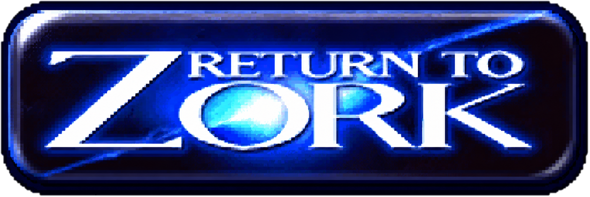

an easter egg
Via the chat at /zork, or in the terminal with python zork.py.
Commands: look, go north/south/east/west/up/down, take lantern/key/letter, open mailbox, open letter, read letter, talk to boos, drink rye, ask vulture [question], answer [word], use key, inventory, quit.
Fair warning: do not enter the basement without the lantern. You are likely to be eaten by a grue.
The same hybrid pattern as the support agent: a deterministic parser owns everything the game must get right (movement, inventory, the riddle, win/lose states), and an LLM narrator improvises in-world responses for anything the parser doesn't recognize, with a vulture whose herding gets more insistent the further off track you stray. One ZorkGame instance per session keeps every player's adventure isolated.
Building this agent kept taking me back to my Return to Zork days, when half the fun was typing a command into the parser just to see what it would understand. That loop of trying something, watching the system respond, and adjusting is exactly what this whole build felt like. What blew my mind is what sits behind the parser now. Back then it was hand-written rules and imagination. Here it is a deterministic engine for everything that must be exactly right, with a language model covering the long tail of everything else. Putting those two eras next to each other reminded me why I love doing this.
I made this Zork game to show how I plan to customize each customer demo, with the bottomless passion I have for solving problems and sparking joy with this technology.
